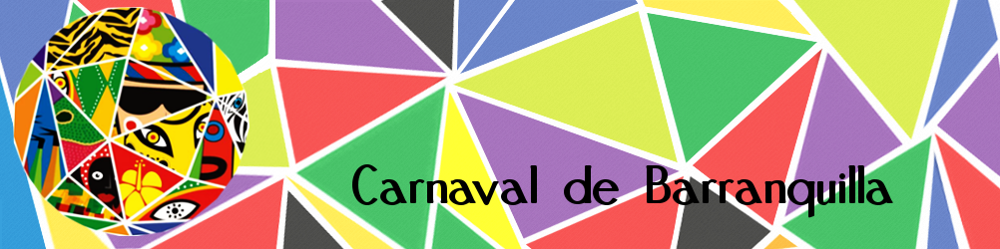

Inicio
Historia
Eventos
Gastronomía
Galería
Multimedia
Contáctenos
Vinculos de interés
El Carnaval de Barranquilla en Wikipedia
El Carnaval de Barranquilla para principiantes
Últimas Noticias del Carnaval de Barranquilla
Danzas/Bailes típicos del Carnaval de Barranquilla
Página oficial Carnaval de Barranquilla